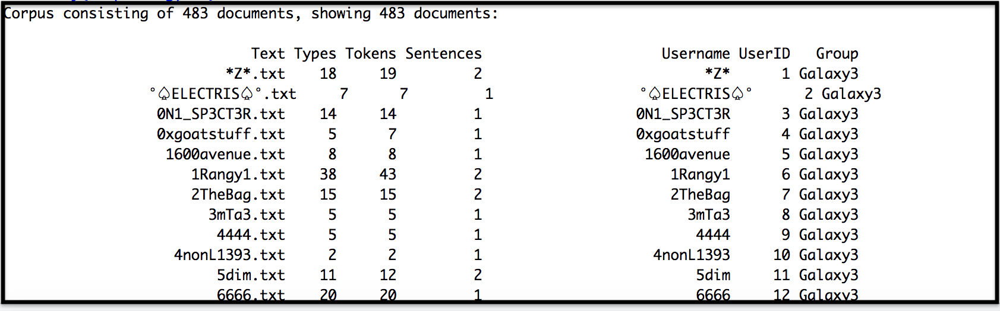
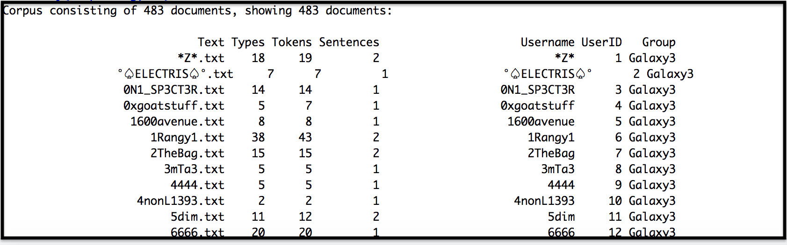

If you want to add a new page, add the below lines to the nginx.conf file located in below path:
Lines to add:
server {
listen 8080;
server_name localhost;
root /path/to/your/website;
index test.html test.htm;
}
We can access this html, by hitting the below URL on the browser:
HiddenServiceDir /usr/local/var/hidden_service/
HiddenServicePort 80 127.0.0.1:8080
This means:
- Hidden service is created and its web address (in .onion) can be found under the path '/usr/local/var/hidden_service'.
- Tor will listen to http traffic at port 80 (virtual port) and forward the same to address '127.0.0.1' and at port 8080.
- The already configured nginx server is serving the html content (index.html) at this port (8080) and address (127.0.0.1).
run below command to start the tor client:
the 'hidden_service' directory will contain following files:
- authorized_clients
- hostname
- hs_ed25519_public_key
- hs_ed25519_secret_key
to access the address of the created onion service, we have to change the access permission through 'chmod' command
run below commands to achieve the same:
Copy and Paste the onion hostname on Tor Browser